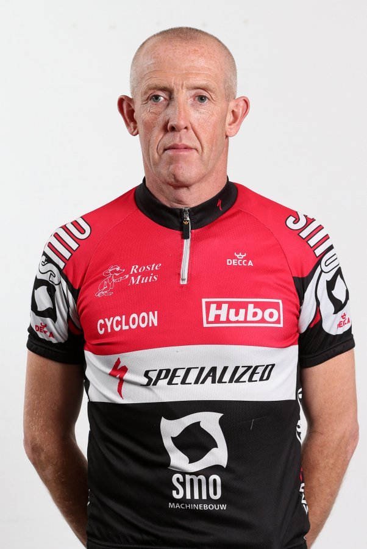
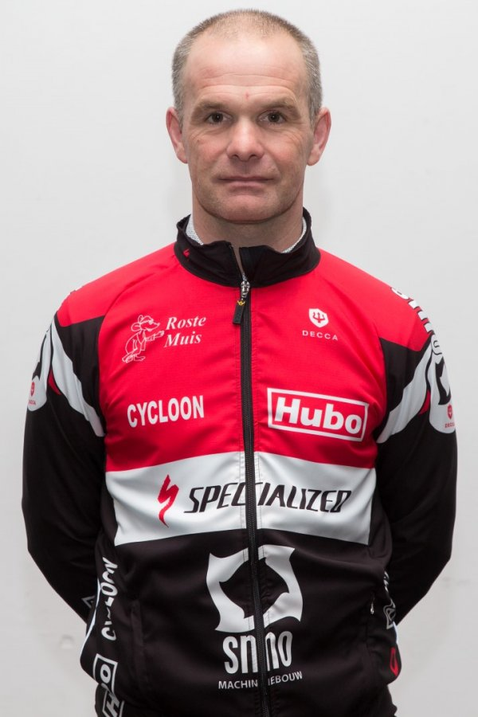
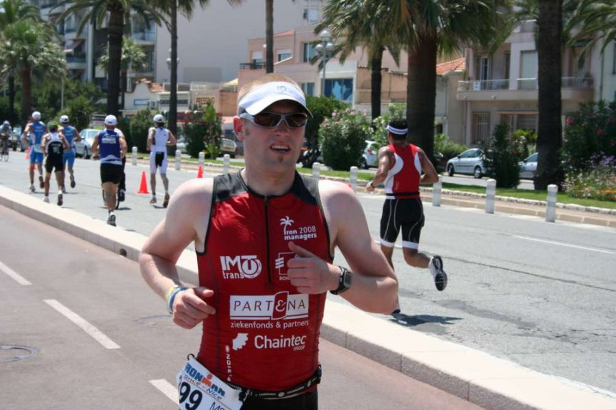
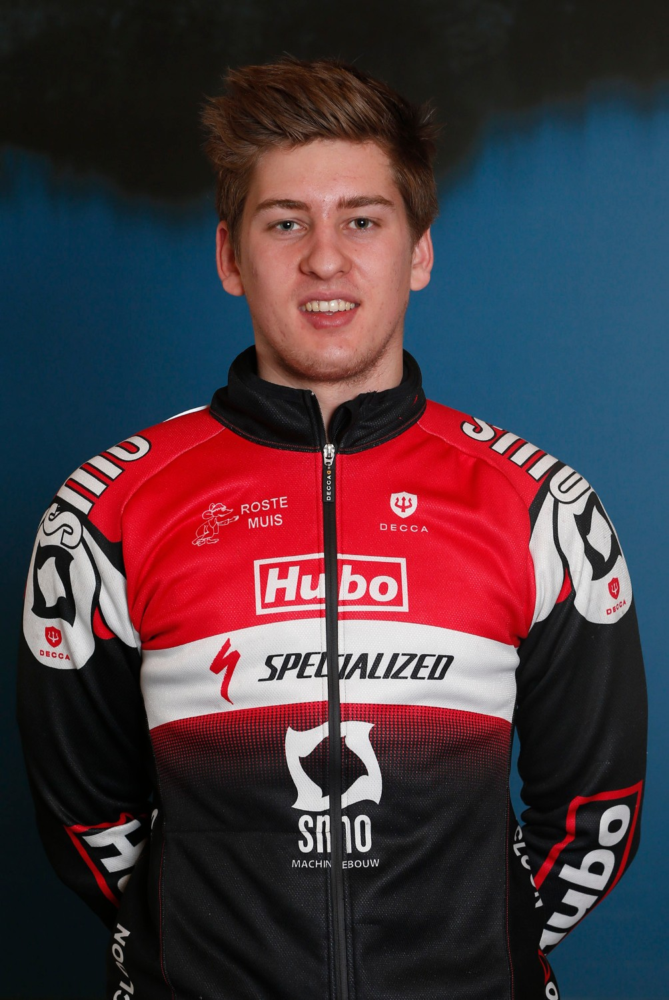
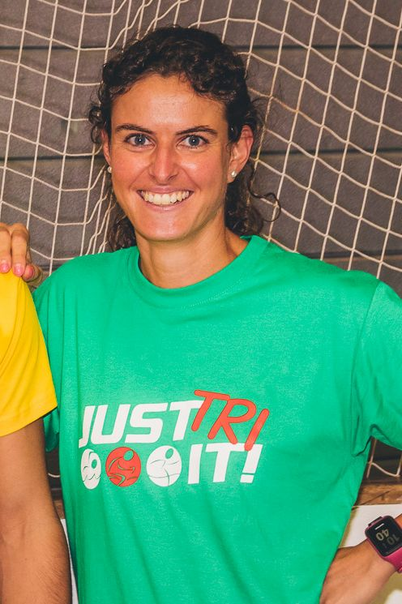
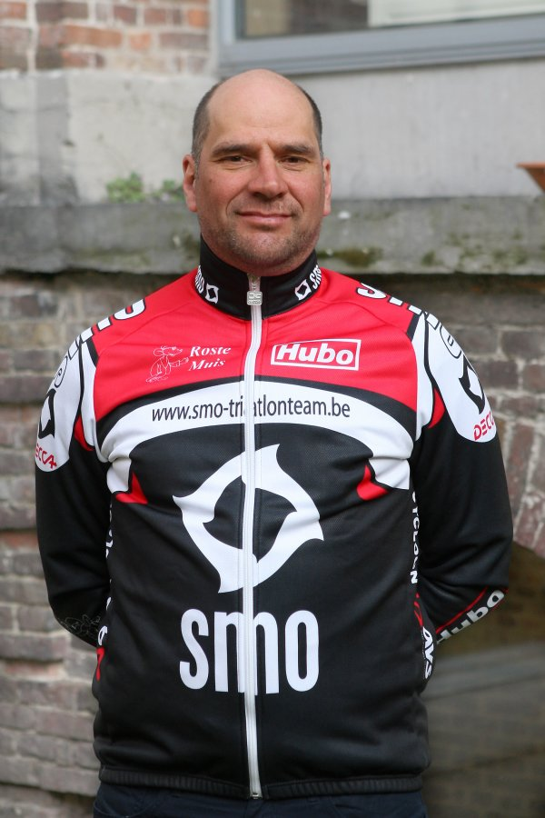
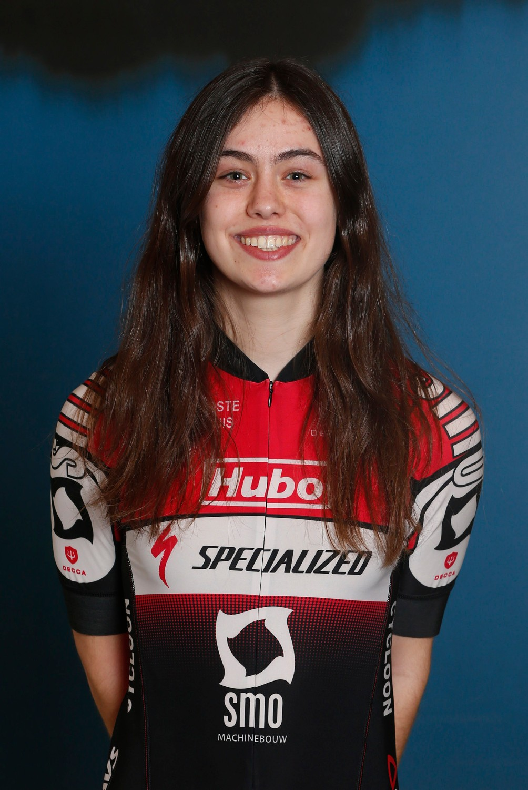
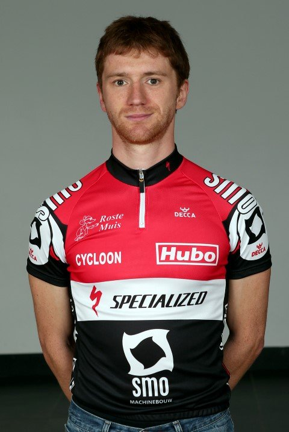

Ondersteunend kader
← Artikels · Fotogalerijen

Jeugdtrainer
- Coördinator jeugd
Contact: jeugd@smo-specialized.be
Teamcoach- Opstellen jaarplanning en trainingsschema's atleten- Overleg en Coördinatie trainers

Jeugdtrainer
Zwemtrainer
Jeugdtrainer
Zwemcoach- Opstellen zwemschema's en Coördinatie - Organisatie zwemtesten en opvolging - Zwemtrainer recreantenJeugdtrainersKledijverantwoordelijke